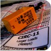
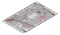
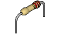
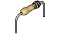
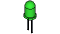
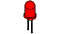
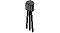
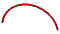

CIRC
11
.:Larger Loads:.
.:Relays:.

(ARDX) .:Arduino Experimentation Kit:. (ARDX)
What We´re Doing
This next circuit is a bit of a test. We combine what we learned about using transistors in CIRC03 to control a relay. A relay is an electrically controlled mechanical switch. Inside the little plastic box is an electromagnet that, when energized, causes a switch to trip (often with a very satisfying clicking sound). You can buy relays that vary in size from a quarter of the size of the one in this kit up to as big as a fridge, each capable of switching a certain amount of current. They are immensely fun because there is an element of the physical to them. While all the silicon we´ve played with to this point is fun, sometimes you may just want to wire up a hundred switches to control something magnificent. Relays give you the ability to dream it up then control it with your Arduino. How to use today´s technology to control the past. (The 1N4001 diode is acting as a flyback diode, for details on why it´s there visit: http://ardx.org/4001)
The Circuit
The Parts
|  | CIRC-11 Breadboard Sheet (optional) x1 |
2 Pin Header (optional) x4 |
Diode (1N4001) x1 |
Relay (DPDT) x1 |
|||
|  | 2.2k Ohm Resistor Red-Red-Red or Red-Red-Blk-Brn x1 |
 | 560 Ohm Resistor Green-Blue-Brown or Grn-Blue-Blk-Blk x2 |
 | Green LED x1 |
 | Red LED x1 |
|  | Transistor P2N2222AG (TO92) x1 |
 | Wire | ||||
Schematic
Resources
.:download:.
Breadboard layout sheet
http://ardx.org/BBLS11
Fritzing diagram
https://wcrsyyc.github.io/ardx/fritzing/CIRC11.fzz
Fritzing relay part
https://wcrsyyc.github.io/ardx/fritzing/DPDT-941-Relay.fzpz
.:view:.
assembly video
http://ardx.org/VIDE11
Code (no need to type everything in just)
Previously, this used the standard "Blink" example code. However, the example provided with the Arduino IDE has been changed, so it is no longer as close to what is needed here as it used to be.
Download our Code, based on the older Blink version from ( https://wcrsyyc.github.io/ardx/code/CIRC11-code.txt )
(and then copy the text and paste it into an empty Arduino Sketch)
/*
Blink
Turn a Transistor on for one second, then off for one second, repeatedly.
The circuit:
NPN Transistor connected from digital pin 2 (base) to ground (emitter).
The load (here a relay) connected to power (5V) from transistor collector
Created 16 Aug 2020
based on an original by H. Barragan for the Wiring i/o board
*/
const int DRIVE_PIN = 2; // Transistor base connected to digital pin 2
// The setup() method runs once, when the sketch starts
void setup()
{
// initialize the digital pin as an output:
pinMode(DRIVE_PIN, OUTPUT);
}
// the loop() method runs over and over again,
// as long as the Arduino has power
void loop()
{
digitalWrite(DRIVE_PIN, HIGH);// turn the Green LED on
delay(1000); // wait for a second
digitalWrite(DRIVE_PIN, LOW); // turn the Red LED on
delay(1000); // wait for a second
}
Not Working? 3 things to try
Nothing Happens
If you are familiar with the Blink code example, maybe you connected to pin 13. Verify that the transistor base is connected to pin 2.
No Clicking Sound
The transistor or coil portion of the circuit isn´t quite working. Check the transistor is plugged in the right way.
Not Quite Working
The included relays are designed to be soldered rather than used in a breadboard. As such you may need to press it in to ensure it works (and it may pop out occasionally).
Making it Better?
Watch the Back-EMF Pulse
Replace the 1N4001 diode with an LED. You´ll see it blink each time it "snubs" the coil voltage spike when it turns off. Make sure to get the LED the right way around. Here it is backwards from the way it would be connected to just turn it on from power. The power actually comes from the energy stored in the magnetic field of the relay coil, when the power is turned off.
Controlling a Motor
In CIRC-03 we controlled a motor using a transistor. However if you want to control a larger motor, a relay is a good option. To do this simply remove the red LED, and connect the motor in its place (remember to bypass the 560 Ohm resistor).
Controlling Motor Direction
A bit of a complicated improvement to finish. To control the direction of spin of a DC motor we must be able to reverse the direction of current flow through it. To do this manually, we reverse the leads. To do it electrically we require something called an h-bridge. This can be done using a DPDT relay to control the motor´s direction. Wire up the following circuit. It looks complicated but can be accomplished using only a few extra wires. Give it a try. Here is a link to the full H bridge Fritzing diagram https://wcrsyyc.github.io/ardx/fritzing/CIRC11h.fzz